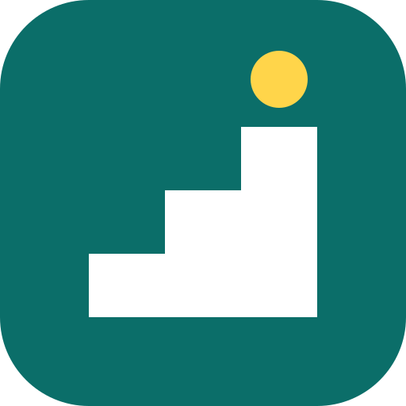

Paso a Paso Abrir la app¿Tu mamá o tu papá te llama para preguntarte cómo mandar un audio?
Paso a Paso les enseña a usar el celular con calma, con voz y practicando sin riesgo: llamadas, WhatsApp, fotos y cómo no caer en estafas. Es gratis y funciona en Android y iPhone.
Cómo dejarla lista en 5 minutos
- Ábrela en su celular. Mándale el enlace por WhatsApp o ábrela tú mismo en su teléfono.
- Agrégala a su pantalla de inicio, para que la encuentre como cualquier otra aplicación.
En Android (Chrome)
Toca los tres puntitos ⋮ arriba a la derecha → “Agregar a la pantalla principal” o “Instalar aplicación”.En iPhone (Safari)
Toca el botón Compartir (cuadrado con flecha hacia arriba) → “Agregar a inicio”. - Acompáñale en la primera lección. Después puede seguir a su ritmo, cuando quiera, sin depender de ti.
Lo que va a aprender
👆 Primeros toquesTocar, deslizar, mantener presionado, agrandar la letra, volver atrás.
📞 LlamadasContestar, marcar un número, guardar contactos.
💬 WhatsAppEscribir, mandar audios, ver fotos.
🛡️ EstafasReconocer el “cambié de número”, el SMS falso del banco y otras estafas comunes en Chile.
🏦 Mi banco en el celularEntrar a la app, ver el saldo, transferir a un familiar y cuidar la clave.
📷 Cámara y fotosPronto
🏛️ Salud y ClaveÚnicaPronto
¿Por qué funciona?
- Practica en un celular de mentira dentro de la app: no hay miedo a mandar algo por error ni a “echar a perder” nada.
- Le habla en voz alta, con calma, y le muestra con una manito dónde tocar si se queda pegado.
- Nunca hay “error”: solo “casi, mire, es aquí”. Y celebra cada logro.
- Al terminar cada nivel, puede contarte por WhatsApp lo que aprendió.
Consejos para acompañar sin frustrarse (ni frustrarle)
- 🙌 No le quites el celular de las manos. Que sea su dedo el que toca, aunque demore.
- 🐢 Una cosa a la vez. Hoy contestar llamadas; los audios, otro día.
- 📝 Escríbele los pasos en un papel, con sus palabras. Es su “machete”.
- 💛 Celebra lo que logra, aunque te parezca muy simple. Para quien parte de cero, es un montón.
- 🔁 Repetir no es molestar. Si pregunta lo mismo tres veces, es porque está aprendiendo.
Pídele una lección
¿Quieres que practique algo en particular? Elige la lección y se la mandas por WhatsApp. Al tocar el enlace, la lección se abre directo en su celular.
Plan Familia
Ya disponible y gratis:
- 📊 Ver su avance. Desde la app, tu familiar toca “Enviar mi avance” y te llega un enlace por WhatsApp con las lecciones que completó.
- 📚 Mandarle lecciones específicas, aquí arriba.
Muy pronto:
- 🔄 Avance actualizado solo, sin que tenga que enviarlo.
- 🚨 Avisos de estafas nuevas que están circulando en Chile.
- 👨👩👧 Varios familiares acompañando a la misma persona.
Tu avance no se guarda en ningún servidor: viaja solo dentro del enlace que te mandan. Y la app para quien aprende seguirá siendo siempre gratis y sin publicidad.
¿Municipio, Caja de Compensación o empresa?
Paso a Paso puede apoyar talleres de alfabetización digital para personas mayores, con lecciones adaptadas a tus servicios y con tu marca como patrocinador.
Paso a Paso · Hecho en Chile con paciencia 💛